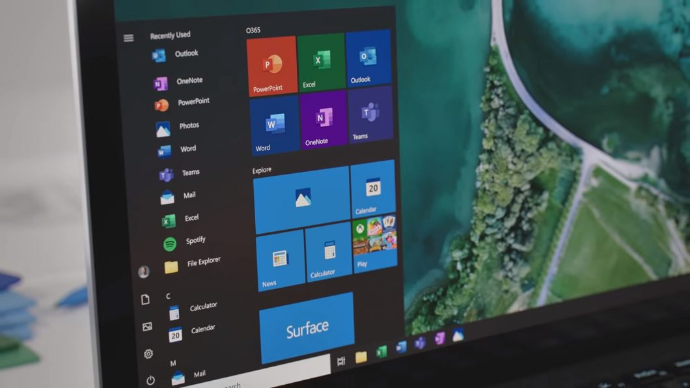

O blog 7TERA é um site de tutoriais sobre diversos temas envolvendo tecnologia! Buscamos sempre ajudar nossos leitores com a maior variedade de guias e tutoriais.
 Como limpar os arquivos temporários do Windows Neste tutorial, iremos ensinar como limpar os arquivos temporários de seu computador.
Atalhos essenciais do Windows Neste tutorial, iremos ensinar alguns atalhos do Windows, essenciais para você.
Como adicionar uma nova página no Word Neste tutorial, iremos ensinar como adicionar uma nova página, e uma quebra de página em seu documento do Word
Como adicionar uma nova página no Word Neste tutorial, iremos ensinar como adicionar uma nova página, e uma quebra de página em seu documento do Word